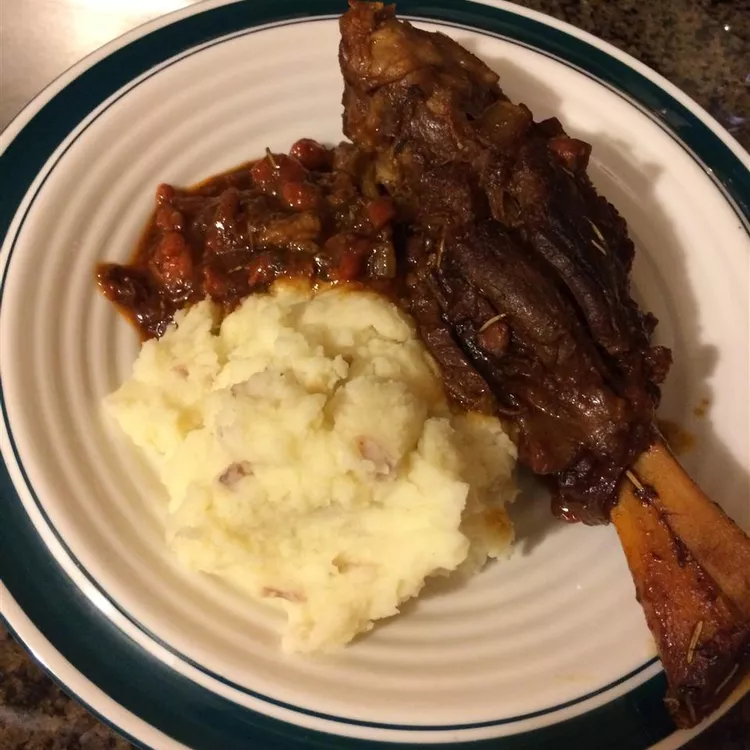

Stout-Braised Lamb Shanks

Description
A hearty Irish lamb shank stew that is perfect for your St. Patrick's Day celebrations!
Ingredients
- 1 tbsp vegetable oil
- 4 lamb shanks
- 1 onion, chopped
- 4 cloves garlic, chopped
- 2 carrots, chopped
- 2 celery ribs, chopped
- 2 tbsp tomato paste
- 14 oz beef broth
- 12 floz stout
- 3 sprigs fresh thyme
- 3 sprigs fresh parsley
- 1 bay leaf
- 1 sprig fresh rosemary
- salt and pepper to taste
Steps
- Heat oil in a Dutch oven or large, wide pot over medium-high heat until oil begins to smoke. Sear lamb shanks in hot oil on all sides until browned, about 10 minutes. Remove lamb shanks and set aside. Drain excess grease.
- Add onion and garlic to the Dutch oven over medium heat. Cook and stir until onion is softened and translucent, about 5 minutes. Stir in carrots, celery, and tomato paste; cook for 5 minutes more.
- Return lamb shanks to the Dutch oven and pour in broth and stout beer. Use kitchen twine to tie together thyme, parsley, and bay leaf into a secure bundle; add to lamb shanks. Bring to a boil.
- Reduce heat to medium-low, cover, and simmer, stirring occasionally, until lamb is tender and nearly falls off the bone, 2 to 3 hours. Stir in rosemary sprig and season with salt and pepper during the last 10 minutes of cooking. Remove rosemary sprig and herb bundle before serving.